and then wrote down what questions I had about the Greater Boston Area (GBA)
as it relates to zoning before looking at the available dataset.
What percentage of residential land is zoned for detached single-family homes and other housing in Cambridge / the greater Boston area?
What are the other kinds of residential zoning areas besides detached single-family homes?
How has this changed over time?
What is the estimated residential zoning capacity for Cambridge / the greater Boston area?
How does this compare to the population of Cambridge / the greater Boston area?
How has this changed over time?
What demographic patterns are tied to single-family zoning?
Is zoning tied to wealth? (ie. do more affluent areas have more single-family housing?)
Can "thrifty and economical" moderate wage-earners afford "modest single-family" dwellings in Boston?
Is zoning excluding families with children, pushing birthrates down?
Is zoning tied to race?
Is there evidence of upzoning efforts?
Have zoning designations changed over time?
How many cohousing / coop communities are there in the GBA?
How many communities allow / have accessory dwelling units (ADUs)?
What is the role of public transportation access in zoning policy?
Do MBTA adjacent communities have less single family housing?
Discoveries & Insights
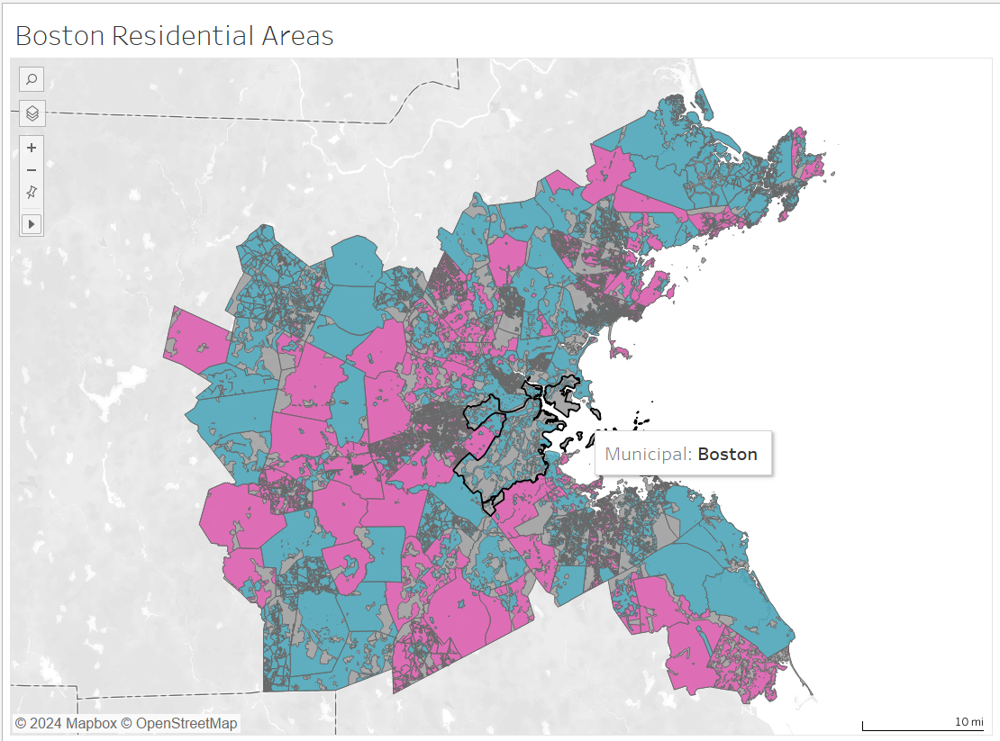
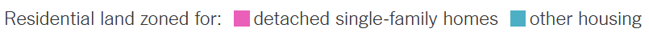
A map of residential areas in the MAPC area, which includes 101 municipalities in the Greater Boston Area.
Areas in pink are residential land zoned for single-family homes only.
Areas in blue are other residential areas.
Areas in dark grey are non-residential land.
Areas in light grey are is land not included in the MAPC area.
Areas in white are water.
Observations
I started my analysis by recreating the map from the NYTimes article
(I even copied the color palette and took a screenshot of the legend)
so that I could compare the results from Boston with the article.
Most municipalities seem to be either predominantly pink or blue.
However, there are some exceptions like Quincy or Melrose.
As I would expect, it seems like the municipalities closer to
central Boston, like Cambridge or Chelsea, tend to be blue,
with notable exceptions of Milton and Brookline. The areas farther away
from the center of the city, especially away from the coast
such as Weston, Framingham, and Dover tend to be single-family only.
Most of the Boston municipalities are pretty small (around
10-20 square miles.) According to Wikipedia,
NYC has a land area of
300 square miles divided among 5 boroughs.
According to Wikiwand,
Boston's land area is around 48 square miles, and the MAPC district the map shows
had an area of around 1250 square miles (not including water)
divided up among 101 municipalities.
Limitations
Unfortunately, I did not find an easy way to export my Tableau
visualizations to this web page so all my visualizations here
are static screenshots. I found Tableau's auto-tooltips quite
valuable as I did my analysis and wish they were included.
While the metadata did not list what year the zoning data
was from, according to MAPC's website
the zoning data is from December 2020. I don't know whether
the data has been updated since then, or when the class's
dataset was created.
In some places like Somerville, it is difficult to
distinguish color or municipality boundaries
because the zoning map lines are so close together.
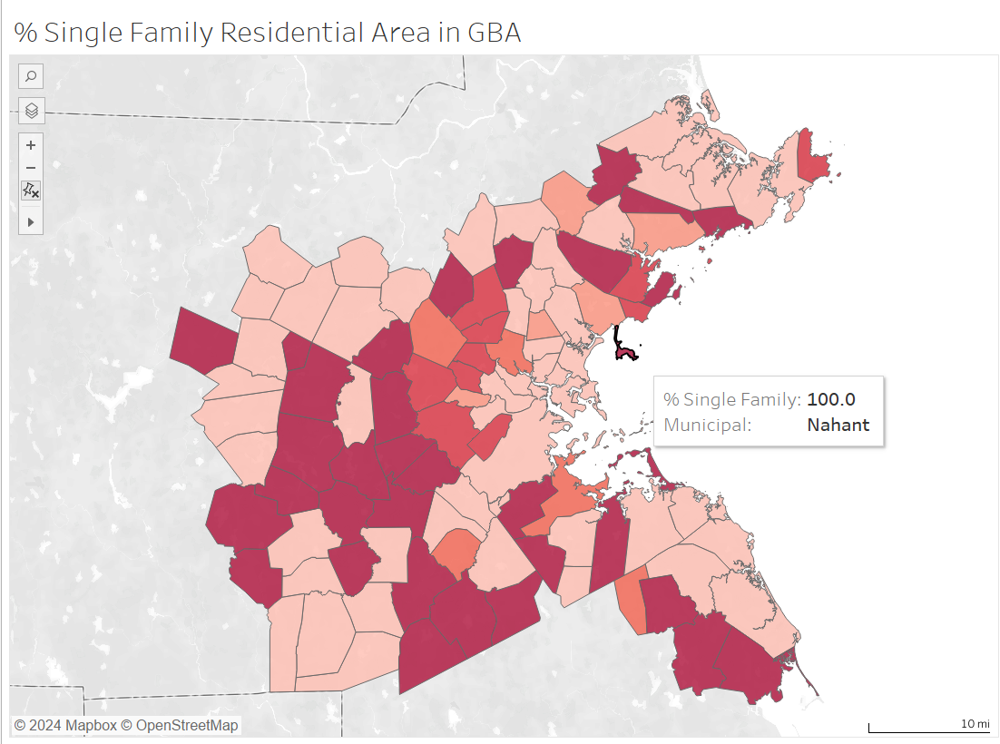
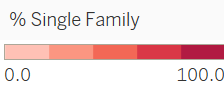
A map of 101 municipalities in the GBA showing what percent of residential
land in each municipality is zoned for only single-family homes.
Observations
This map is much cleaner, and doesn't have the distracting
borders of the first graph. It makes it much easier to see
the trend of municipalities tending to either be all or nothing
when it comes to residential zoning.
In Tableau, I did some calculations of the area
of the residential areas and got about 1115 mi^2 for the
total residential area and 473 mi^2 for the single family
only zoned areas. That means about 42% of the GBA residential
area is zoned for single family housing only. This seems
rather high compared to NYC (15% according to NYTimes),
given that according to
US News
Boston is the 12th most expensive city to live in the US.
Limitations
This map shows less information than the previous map, as it only shows percent
and not the zoning boundaries (non-residential, single-family, non-single family residential)
and could potentially be misleading without the added context.
I'm unsure whether my calculations are accurate, I didn't do
a super in-depth search online to see if there were any
official statistics. The total area of the municipal areas
(1440 sq miles) is a bit off compared to
what I found on Wikiwand
(1422 sq miles), but seems reasonably close. I'm unsure
whether the residential area boundaries include water, roads, etc
but hopefully 1115 sq miles for residential area is
a reasonable approximation.
I'm curious why Boston was left out of
the NYTimes article as well (although I suppose this MAPC data
wasn't made initially available until after the article was published.)
Zoning is a bit deceptive. I'm sure some areas like
Westwood and Concord that have no single-family only
residential zoning have quite a number of single family homes. I
wish the data was more granular so that I could determine
the actual percentage of residential land occupied by single
family homes.
I had two other questions related to maps - first, "What are
the other kinds of residential zoning areas besides
detached single-family homes?" and second, "How has this changed over time?"
I believe the first question can be answered if I dug more
into MAPC's zoning atlas. I don't know if it's possible
to answer the second question with the available data (but
I haven't researched what other available datasets.)
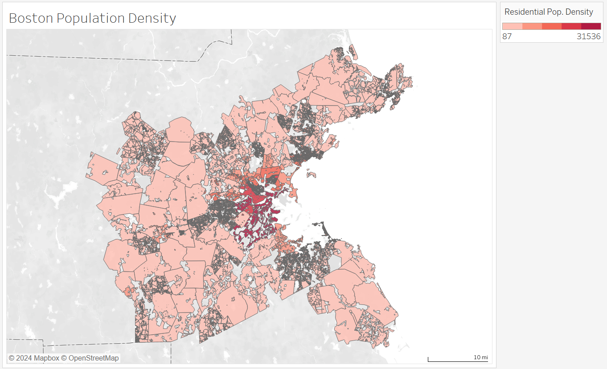
This map of municipalities in the Greater Boston Area shows the
population density of each residential area per square mile, split
by whether the residential area is zoned for single family housing or not.
Observations
I expected that the area close to central Boston would be the
most population dense, and the map shows that. Population
figures come from the 2010 census, when the Greater Boston
Area had a population of a bit over 3 million according to
the provided data.
Limitations
According to Wikipedia / the 2020 census
the Greater Boston Area is home to over 4.9 million people.
Unclear if the Greater Boston Area is equal to the MAPC region,
but I think it is likely the MAPC region experienced similar
growth. Because the dataset is so out of date (showing closer to
2020 zoning areas) with only 60% of the 2020 GBA population,
I'd seriously question whether the following population statistics
are accurrate and would not recommend drawing definite conclusions
based on these population density charts.
Because the median region population density is 2500 people
per square mile, most areas are the lightest color, making
it hard to see the contrast. I'm be hesitant to make this
choropleth map based on a log scale though because I think
that would be potentially misleading, even if it would provide
better contrast on the lower numbers.
It's also really hard to compare the density between single
family only housing and non-single family housing areas within
the same municipality without getting overwhelmed by the data.
I couldn't figure out how to make the color be distinct
depending on the value, but I did a hacky negative / positive
comparison below.
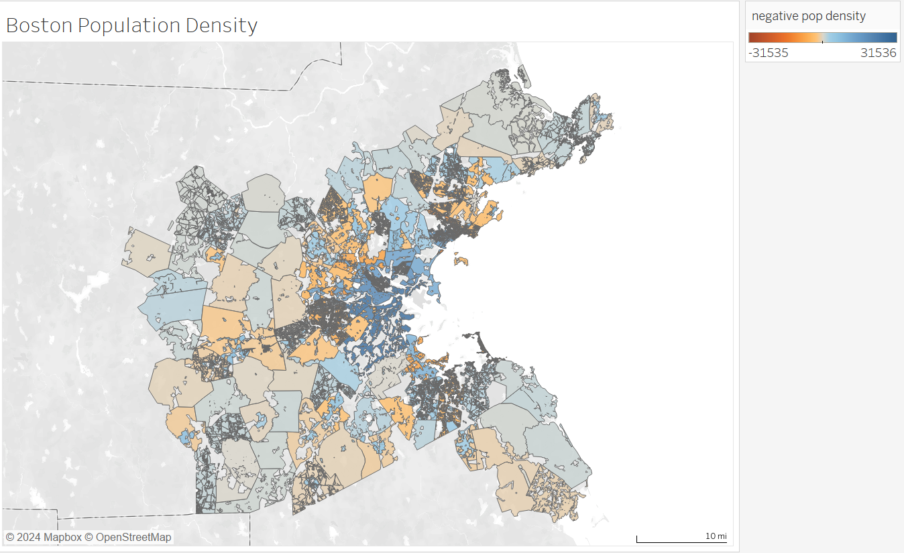
This map of municipalities in the Greater Boston Area shows the
population density of each residential area per square mile,
where color indicates whether the residential area is zoned
for single family housing or not. Negative / red values
are single family housing zoning areas, blue areas are other
residential areas.
Observations
This map makes it clearer that both single family and non-single
family residential areas near the center of Boston have
higher population densities. This might be due to the fact
that many homes close to Boston are actually split into
apartments (I currently live in an apartment on the third
floor of a large house in Cambridge.)
Similarly, both kinds of residential areas on the outskirts
of Boston are much less dense. There are some exceptions
where you see a dark blue patch surrounded by grey-ish orange
area in Millis, Framingham, and Milford where the other
residential areas are more than three times as densely
populated as the single family only zone of the same
municipality.
Limitations
It's a bit weird to see a negative number indicating
population density so this feels a bit hacky.
It's hard to tell from the visualization that the maximum
single family housing density is around 14,500, which is
less than half that of the densest non-residential area that
is over 31,500 people per square mile.
The greyish values in the middle make it hard to distinguish
which kind of zoning this falls into. While this preseves
the spatial component and somewhat the type and intensity
of density, it would be very difficult for anyone to
accurrately determine exact values or even whether the
blue areas or orange areas are more dense overall at a glance.
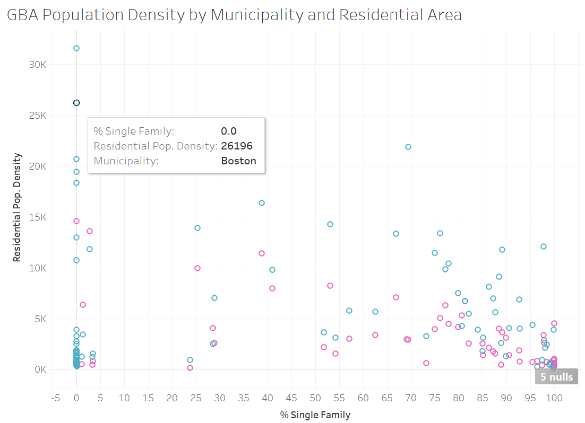
A chart showing population per square mile on the y-axis
and percent of a given municipality's residential area zoned
for single family housing on the x-axis. Color indicates the
type of residential area.
Observations
Surprisingly,
Somerville has the highest population density.
There seems to be a negative trend in the chart. As
percent of single family residential areas increase,
the population density increases. It's easier to tell in
the middle (where a single municipality has a distinct x value
so you can clearly compare its single family and non-single
family areas) that a municipality's blue dot tends to be
much higher than the pink dots.
Most areas both single family and non-single family have
density under 10k. But it seems like the blue dots tend
to have higher population density than the pink dots, with
some exceptions noted below.
There are two clusters of points with low population density.
First, there is a cluster of mostly blue dots in the
bottom left showint that places that are far from the
center of Boston like Boxborough, Carlisle, and Essex
don't have restrictive zoning but are not densely populated.
Then, in the far right bottom corner there is a cluster of
mostly pink dots showing municipalities
with primarily single family housing like Dover and Bolton
have very low population densities.
Perhaps the blue cluster provides some evidence of upzoning
efforts that haven't taken effect yet? It's hard to tell
though because the
provided data gives me a single snapshot of somewhat recent
zoning boundaries and somewhat old population data.
Limitations
The clusters are hard to count, so the negative trend might be
over-emphasized.
Here you get the advantage of better accuracy at the
cost of geographical awareness.
It's perhaps confusing that some municipalities have two
dots while others have one, some people might assume each
dot is a different municipality.
Having % single family zoning in residential areas be the
x axis might be confusing as well since both kinds of
residential areas use that as the x-value. Maybe in general
the split by both residential area and municipality is too
much for one chart. Some attempts to simplify this below...
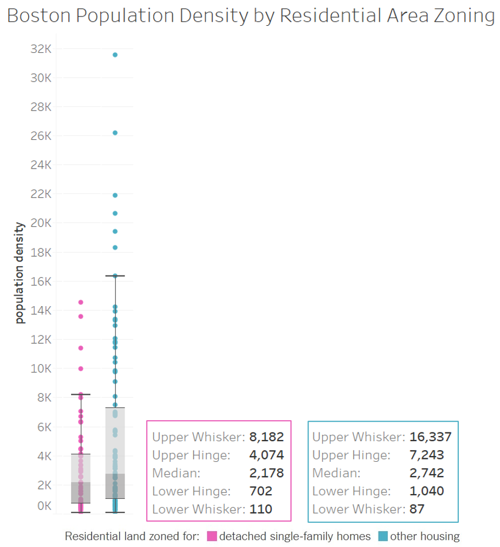
Boxplots showing the population density (population per square
mile) for single family only
and other residential areas for 101 municipalities in the Greater
Boston Area.
Observations
Here when the only dimension is zoning type, it is easier
to see that for the median and below, both zoning types
have very similar population densities.
For the third quartile and above, it becomes very
clear that single family zoning has much lower population
density compared to less restrictive zoning.
I think with this information I can make some very rough
estimates to answer my question, "What is the estimated
residential zoning capacity for Cambridge /
the greater Boston area?" Given current zoning limits,
we have 473.5 square miles of single family only and
641.5 square miles of non-single family zoning. If we
take each 75th percentile as an estimate for a
future average population density, that means Boston has a
residential capacity of 6.5 million people. If all the zoning
was upzoned, Boston would have a residential capacity
of roughly 8 million people, which is a big difference.
The population of the Greater Boston Area grew
by 1.9 million people (from 3-4.9 mil) between 2010-2020.
If Boston experiences the same population increase in the
next decade, by 2030 Boston would have a population of 6.8 million.
This exceeds the estimated housing capacity under current
zoning limits, meaning that Boston could very well run out
of housing (which would limit growth, push up housing costs,
and mean that lower income people could no longer afford
to live in the area.)
Limitations
Again, we're losing out on the geographical context that
some of the blue dots are located far from the city center
and some of the pink dots are quite close to the center of
Boston.
Similarly also lose the ability to compare points in the same
municipality.
I'm not an expert in city planning and don't actually
know how they make population limit estimates (probably it
takes into account logistical constraints, not just area.)
Without knowing how population density / zoning has changed
over time it is difficult to get better estimates.
The upzoning estimate is a bit naive - simply upzoning doesn't
mean that single family homes are going to be sold, demolished,
and denser housing is going to replace it immediately. It
is likely that places that have been upzoned will more
slowly experience greater density than other areas (but
again it's hard to tell without time dependent data.)
The boxplot terminology might be hard to interpret for
someone not familiar. If I had more time I would have
done more than taken a screen shot in tableau - I would
have annotated the points directly on the boxplot to make
numerical comparisons easier (same below.)
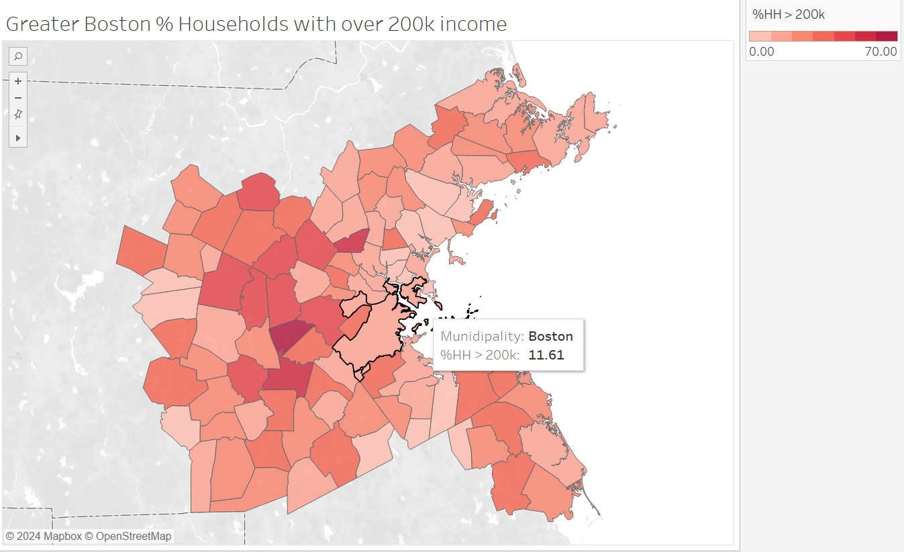
A map of 101 municipalities in the Greater Boston Area
showing the percent of households in each municipality that
make over $200,000 a year.
Observations
Unsurprisingly, the places outside of Boston with lower
population density also tend to have higher incomes.
For example, nearly two-thirds of households in Wellesley
earn more than $200,000 a year.
Around 17% of the 1.2 million total households in the
Greater Boston Area have incomes of more than $200,000 according
to the income data. 41% of households make between $75,000-200,000.
The remaining 42% of households make less than $75,000.
Around 10 municipalities have > 40% of househoulds make
more than $200,000. Around 15 municipalities have less than 10%
of households making more than $200,000.
Limitations
This calculation is not accurate. I was running low
on time and didn't generate the total number of households
across both kinds of residential areas, so this just shows the
maximum of (% of households > $200,000 in single family only,
% households > $200,000 in other residential areas). Many apologies.
Per the metadata, "2014-18 income(Blocks Groups). As the Blocks
Groups are more general than zoning, when certain zoning areas
are too small, their income values may be lost because they
cannot be aggregated. The total households from income data
may be different from the households from population data as
they come from different years."
Again, this data is almost 10 years old and may not reflect
current trends. Also, using 2014 data with 2020 zoning areas
might be a problem if the zoning areas changed during that time.
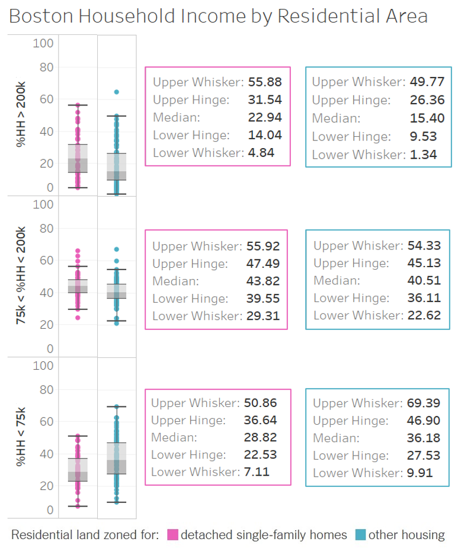
Boxplots showing distribution of different income groups
depending on residential area type in the Greater Boston Area.
Boxplots and numbers on the left indicate residential areas zoned
for single family housing only. Boxplots and numbers on the right
are other residential areas.
Observations
From the boxplots, we can see that single family only residential zones
tend to have higher percentages of high income households,
slightly more middle income, and fewer low income households
than non-single family residential areas.
However, the median difference across all categories was
less than 10%.
Still, this supports the finding in the
Exclusionary by Design report
that zoning policies in the Greater Boston Area result in
classist divisions between single family and non-single family
residential areas.
Limitations
While this shows household incomces, this does not show
home ownership. It is likely that many lower income households
are renting homes in single-family housing areas.
Similarly, other residential areas likely contain a mix
of single family homes, condos, and places that are rented out.
Without knowing what group (renters vs owners) households
fall into, it is difficult to know how income impacts ability
to own a home.
Additionally, it is unclear
whether parents with adult children who live with them
would count as separate households or not (I need to dig
more into the methodology of the income group data.)
If I had more time, I would have conducted a Chi-squared
test to check the significance in the differences between
median percent across the different
I grouped the 16 different income brackets into 3 groups. While
this was done somewhat arbitrarily, I did look up median
income in the Greater Boston area and find that it was
around $100,000. I also looked at the income limits income limits for Section 8 housing
and picked $75,000 as a reasonable threshold for very low / extremely low
income. Unfortunately because the household size is not attached
to the income, I can't really accurately categorize income.
A different income grouping may yield different results,
but I think $200,000 is safely considered high income, so I
chose that as the baseline comparison for the map.
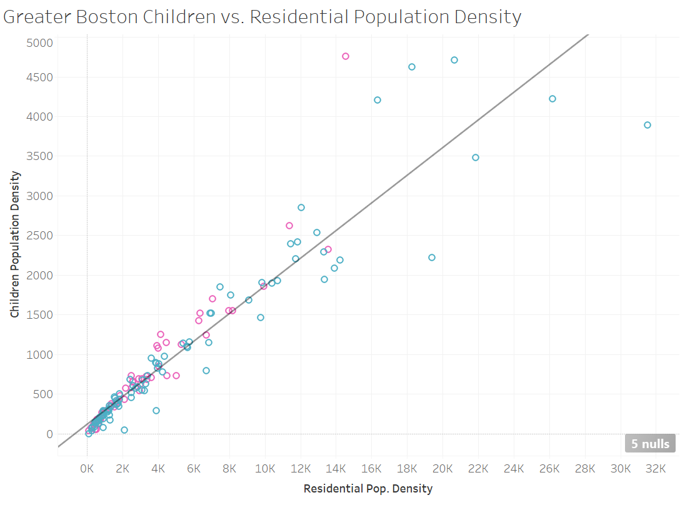
Points represent
residential areas in 101 different municipalities in the
Greater Boston Area. Color indicates the type of residential area.
A chart showing population of people under 18 per square mile of residential area on the y-axis
and overall population per square mile of residential area for single family housing on the x-axis.
Population numbers taken from the 2010 Census.
Observations
According to the 2010 US Census
children made up 24% of the US population. According to the
provided 2010 census data, 20% of the Greater Boston's
population was under 18, slightly lower than the national percentage.
13.4% of the Greater Boston's population in 2010 was 65 and over,
which is slightly higher than the 13.0% national percentage.
It seems like there is a pretty linear relationship
between population density and children population density
(R^2 value .88, p value less than .0001)
meaning that the number of children doesn't really vary
based on how dense the population is. This is important
because one of the key reasons why some people oppose
upzoning neighborhoods is because more children means more
schools and education costs.
However, there are some denser population areas dramatically
above and below the trend-line. Cheaper areas like
Everett, Chelsea, Stow, and Lynn have higher children density
while more expensive areas like
Cambridge, Brookline, Boston and Somerville have
significantly lower children density.
Limitations
Again, this is old census data matched with more recent
zoning data.
It makes sense that a metropolitan area would have more working
professionals and fewer young children, but it
is unclear from the available data whether income and
housing costs are related to this trend because there is no
home ownership data and the income and household data are
from different years.
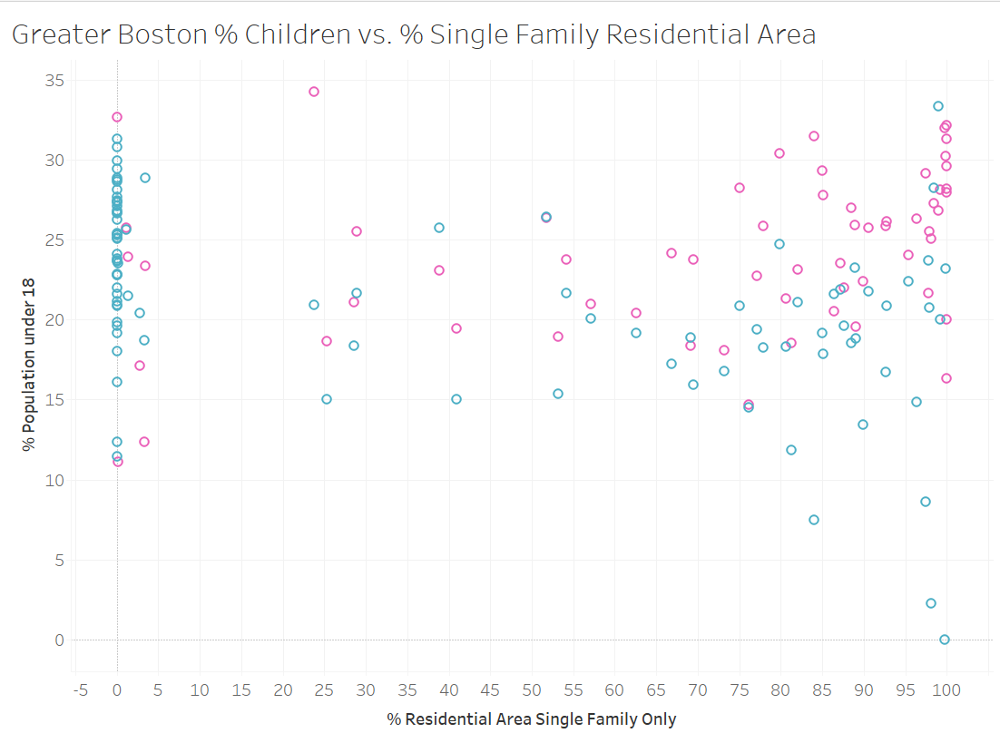
Percent of population who are children plotted against percent
of residential area zoned for single family homes only
for 101 municipalities in the Greater Boston Area. Residential
areas for each municipality is split by whether it is zoned
for single family homes only or not.
Observations
Residential areas with single family homes only have a
higher percentage of children as the population compared to
other residential areas. This complicates the picture of
"more housing = more children" because one of the points of
Living Little
is that smaller denser housing is generally
not conducive to larger families.
One of my original questions was "Is zoning excluding families with children,
pushing birthrates down?"
I think my thought here was that if middle-income couples were being
priced out of home ownership, this would delay child-bearing
and potentially result in smaller family sizes.
I think my conclusion here is mixed. The greater Boston
area overall has fewer children (suggesting smaller family
sizes perhaps tied to costs of living) but that people in
single family only zones might have more children than
in other residential areas. However, there are a lot of confounding
variables, such as a larger family generally will seek a
larger home, while a smaller family may fit in an apartment
or condo.
Limitations
Again, some other residential areas likely contain a
number of single family homes.
There is a potential mistake in the data. I'm pretty
sure that Sudbury's other residential area has more than
0 children, but then again 99.8% of Sudbury's residential area
is single family only (but the other residential area
contains non-zero people 18-65 and 65 and over, so unclear
if they all had no children or if Sudbury has some strange
kind of apartment setup).
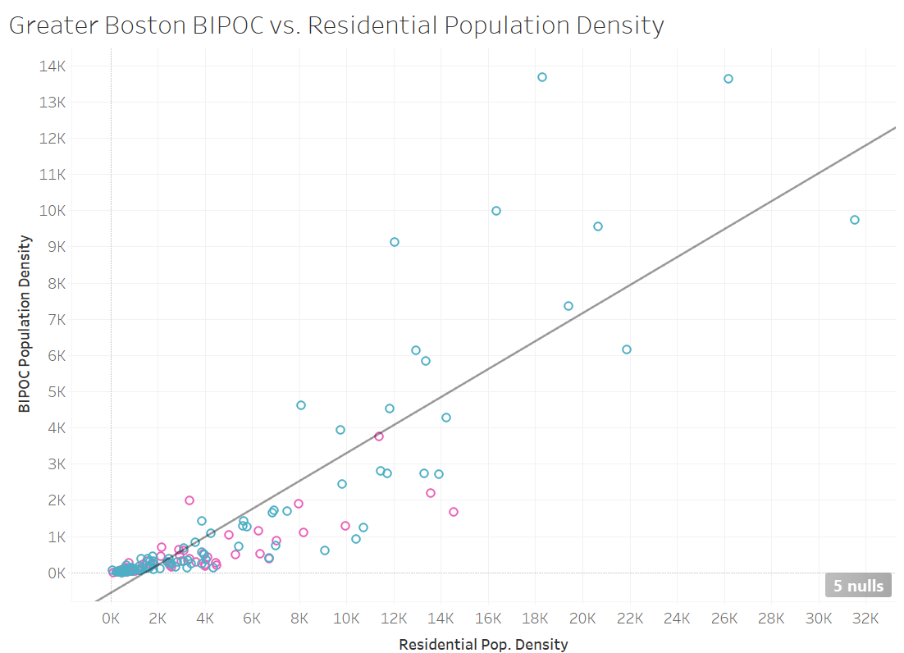
Points represent
residential areas in 101 different municipalities in the
Greater Boston Area. Color indicates the type of residential area.
A chart showing population of BIPOC population per square mile of residential area on the y-axis
and overall population per square mile of residential area for single family housing on the x-axis.
Population numbers taken from the 2010 Census.
Observations
For the purpose of this investigation, I defined BIPOC as
including the following 2010 US census categories included in the provided dataset:
Non-Hispanic Black or African American population.
Non-Hispanic American Indian population. American Indian and Alaska Native alone.
Non-Hispanic Asian population.
Non-Hispanic Pacific Islander population. Native Hawaiian and other Pacific Islander alone.
Non-Hispanic other race population.
Non-Hispanic Multi-Race population.
Hispanic or Latino population.
Again, there is a linear trend between population density
and BIPOC density. However, this is much more scattered
than the children density chart (R-squared .75, p-value less
than .0001.)
There are a large cluster of points with low population density
with extremely low BIPOC density. Examples include Middleton
(single family only, 110 people per square mile, of whom 5 / 110 identify as BIPOC),
Topsfield (non single family residential area, 457 people per square mile, and a shocking 0
people who identify as BIPOC), and Essex (single family residential area, 511 people
per square mile, 0 people who identify as BIPOC).
There are some higher population density areas with
comparitively higher BIPOC densities such as Waltham, Framingham,
Revere, Malden, and Quincy. Interestingly, Revere's single
family only area is a higher density area with half the BIPOC density
of its other residential area, which may suggest high income inequality.
Limitations
There are many limitations to the finite number
of US census categories when it comes to identifying race and
ethnicity, including the fact that separate categories for Middle Eastern
and South-East Asian people do not exist. Additionally,
including the entirety of the hispanic and
latino population likely includes some people who identify as
white.
Because the income dataset is from a different year than
the census, I didn't feel confident trying to explore
trends between race and income in different municipalities.
It is possible that the Sudbury and Essex data is wrong. I
could imagine that it might be easy to plant all of the
population data in one residential area and forget to split them?
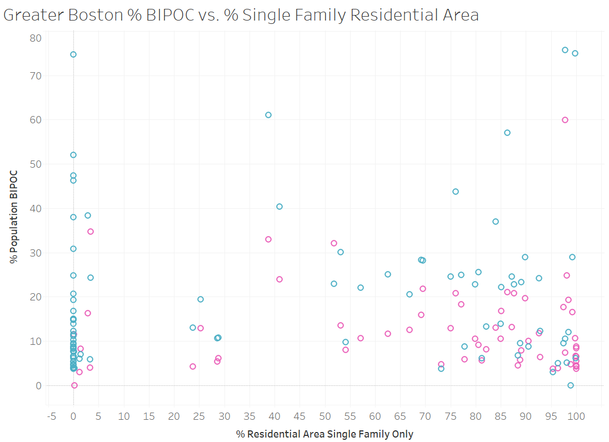
Percent of population who are BIPOC plotted against percent
of residential area zoned for single family homes only
for 101 municipalities in the Greater Boston Area. Residential
areas for each municipality is split by whether it is zoned
for single family homes only or not.
Observations
This shows the opposite trend of the children chart. The
residential areas that are single family housing only
disproportionately have a lower percentage of BIPOC population.
This supports the findings of the
Exclusionary by Design
report which found "instances of both racist intent and
structural racism, where the system disadvantages Black people,
either with or without intent."
Limitations
I wish I had more time to do a careful analysis of these
trends on individual racial and ethnic groups.
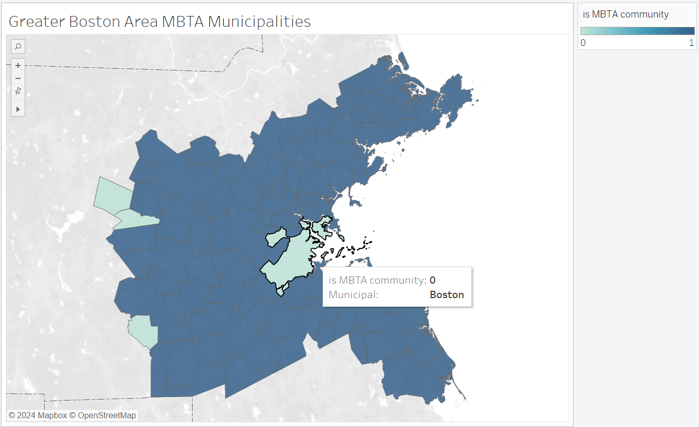
A map showing 101 municipalities in the Greater Boston Area
and whether or not they show up in the MBTA communities list.
"1" indicates positive and "0" means it does not.
Observations
One avenue I wanted to explore was
"What is the role of public transportation access in zoning policy?"
"Do MBTA adjacent communities have less single family housing?"
It would make sense that more dense housing would
be built around the major subway, bus, and commuter rail
stations. However, the data provided listed almost every
municipality as an MBTA community which is not very helpful.
Limitations
Interestingly, Boston is not a MBTA community, which potentially
represents an error in the database (I don't know where
the MBTA community list originated from either.)
Relatedly, I was not able to answer the following questions
from the provided data: Have zoning designations changed over time?
Time data was not available. How many cohousing / coop communities are there in the GBA?
I determined there were 455 non-family households that had seven or more
people, which is some evidence of coop communities. I care about this
mostly because I lived in PIKA (an MIT independent living group that houses
~30 people in a giant three story house with ~ 20 bedrooms and 5 bathrooms.)
Through that I learned that a lot of municipalities in Boston
have tenant laws that prohibit renting to more than four unrelated people
(to prevent overcrowding ostensibly?) This makes establishing coops difficult.
I wonder if many of these large households are actually fraternities and
sorority houses? I need to do more research into how the census defines
a "household".
How many communities allow / have accessory dwelling units (ADUs)?
I believe this information was in the
Living Little
report and might be in the zoning
atlas somewhere, but it wasn't in the provided data.
Summary
Main lessons learned included:
This was my first time using Tableau. I was impressed
with how easy it was to create nice looking visualizations,
especially the maps (I haven't worked with geojson files before.)
However, it was difficult to work with some of the data
because municipalities were split between single family
housing and other residential areas.
Given more time, I would do many things, including:
create another aggregate dataset for all residential
area in each municipality and make the charts interactive.
update population information with results from the 2020 census.
do a deeper analysis of racial and ethnic trends, investigate some of the potential errors.
look for home ownership vs renter data in each municipality / zoning area.
create a time series chart of zoning areas and population changes.
do a deeper dive into the zoning atlas.
I set out with five major questions, and was unable to
conclusively answer most of them. Some questions, particularly
the time dependent ones were impossible answer. For some questions,
like "What demographic patterns are tied to single-family zoning?"
the "answers" vary widely depending on how you look at the data
and what municipalities you focus on.